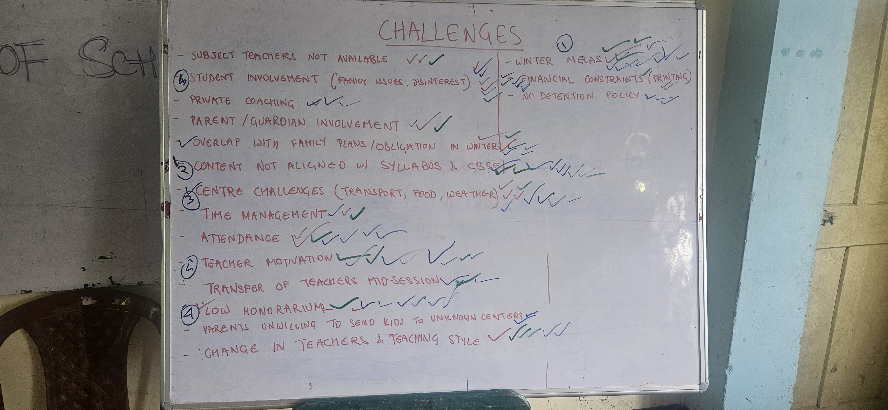
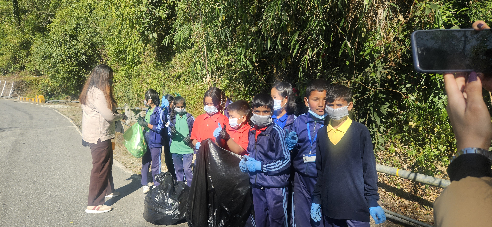
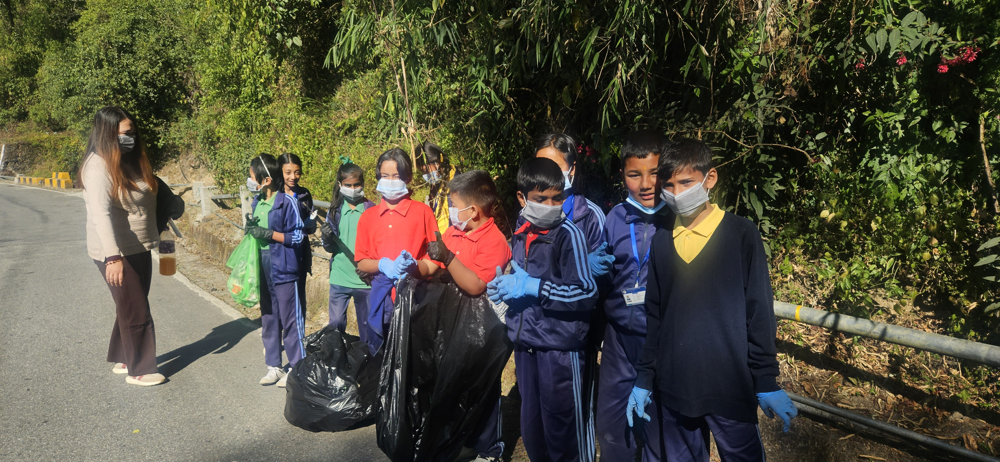
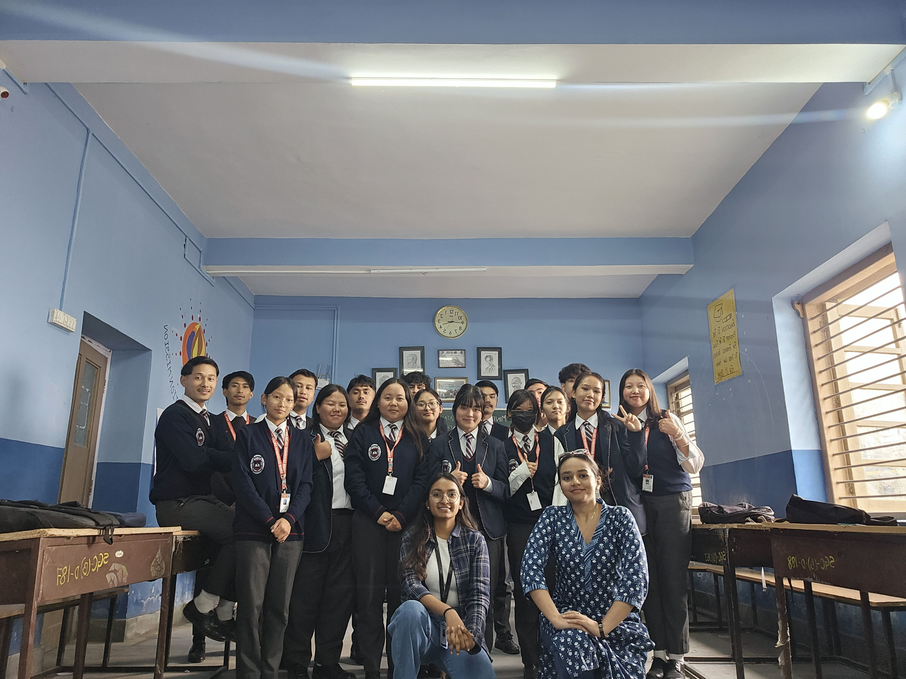
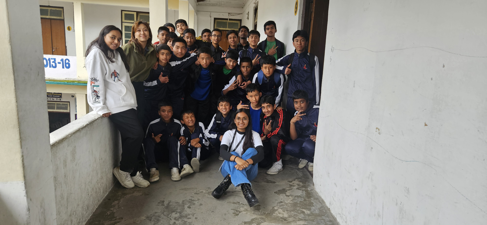

§1
Work experience
in reverse chronological order, like a proof read backwards
Additional Director
· Katalytic Educational Foundation
Aug '25 – Present
Strategy & Operations, Mathematics
- Leading district-wide foundational math initiatives, curriculum frameworks, and educational governance.
- Overseeing cross-district program delivery and operations across Sikkim schools.







Consultant
· Grant Thornton
Jan '24 – Aug '25
FS Transformation, Business Intelligence
- Led transition management for a national web portal — current-state assessment, risk analysis and mitigation, and full transition planning (scope, SLAs, governance, reporting).
- Built a data warehouse for an agri-government bank and managed the project end to end.
- Reviewed 20 AI models (regression, clustering, SARIMAX forecasting) built in Python and visualized in Power BI, delivering targeted optimization recommendations.
- Ran a full Enterprise Data Warehouse audit for a financial services firm — data quality, change & incident management, design & infrastructure, and security/user management.
- Developed client pitches and RFP decks in PowerPoint.
Research Assistant
· University of Houston
Jan '23 – May '23
Supervisor: Dr. Mehrdad Kalantar
- Ran literature reviews on operator algebras to surface research gaps and propose new directions.
- Worked through operator algebra and hyperbolic group problems with Dr. Kalantar and the research group in weekly seminars.
Teaching Assistant
· University of Houston
Aug '22 – May '23
Calculus & Real Analysis
- Ran recitation sessions for two sections of 50 undergraduate students each.
§2
Tools I can use
Python (numpy, pandas, networkx)
LaTeX
Power BI
Excel · Word · PowerPoint
Prompt design for genAI